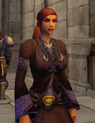

Les Terres de Kirin Tor
Gethsemani
Points : 2

Joué par :
[ Information masquée ]
Age : 22
Lieu de naisance : Andorhal
Signe de naissance : Chouette
Sexe : Femme
Race : Humain
Faction : Alliance
Formation : Démoniste
Niveau : 50
Guilde :
Artisanat 1 : Couturier
Artisanat 2 : Enchanteur
Envoyer un MP
Description : Comme vomi des entrailles de la Terre, une horde de créatures répugnantes déversa sa pourriture sur notre paisible ville d'Andorhal. Tout d'abord, la Peste emporta les plus faibles. Puis, l'armée du Fléau se chargea de brûler nos maison et d'exterminer ceux que la maladie n'avait pas touché.
Rare furent ceux qui, comme moi, survécurent à la destruction d'Andorhal. Mais pour ces gens là, la vie ne fut jamais plus la même. Dans mon cas, j'ai vu, de mes yeux vu, ma grande soeur mourir de la peste après une agonie de 3 jours. Je l'ai vu revenir d'entre les morts, égorger ma mère et se nourrir de son cadavre. J'ai vu mon père broyé par une de leurs abominations. J'ai vu mon village en flamme dans lesquelles dansaient ces créatures cauchemardesques, fières d'avoir détruit nos vie,
Quatre ans après, il ne passe pas une nuit sans que je ne revivre ces événements en rêve.